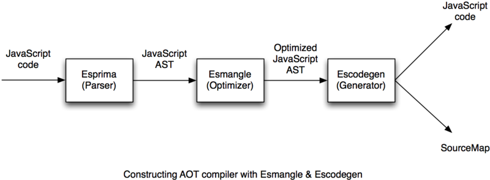
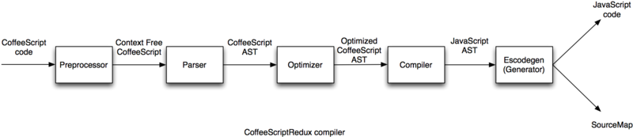

utatane.tea@gmail.com Department of Science and Technology, Keio University |
Javascript is now being used widely and because of this many Javascript tools are being developed.
We present Escodegen and Esmangle. Escodegen is a code generator that takes Mozilla JavaScript AST and converts into JavaScript code. Esmangle is an optimizer and a minifier for Mozilla JavaScript AST.
By using Mozilla JavaScript AST as an intermediate representation (IR), we can combine small tools that operate on AST into larger tools, such as an ahead of time compiler. We can also add our own pass functions that can be applied to the AST from the tools.
As the result, we can develop composable modules independently, reuse them to create new tools, and keep each modules simple. And because of well-documented IR, each module's interface can be standardized.
JavaScript is a programming language usually executed in web pages, and recently used on the server-side.
Many languages that transpile into Javascript have been developed, such as CoffeeScript, TypeScript, ClojureScript and JSX. They define new syntax or otherwise extend JavaScript to provide powerful features. However, transpiled languages have a problem that they are difficult to debug since line and column numbers of the output script do not correspond to the original. If an error occurs, we cannot rely on the error's location information.
Because script size affects performance of a site, minifier tools have also been developed. For example, we can use UglifyJS, YUI compressor or Google Closure Compiler. They parse JavaScript, trim white spaces, do optimization and shorten variable names. They have the same debugging difficulties as transpilers.
The solution to this line mapping problem is SourceMap, which is a JSON file that holds location mapping information which is lost in transformations. By using SourceMap, debuggers can associate an executed script with an original script to provide line and column numbers information to developers. UglifyJS2 can generate SourceMap.
However, there is still a problem because current tools accept JavaScript as text, but much information is discarded, such as location information. For example, if you write code in CoffeeScript, compile it to JavaScript code and dump it to minified script by minifier, location information from the minified script to the original CoffeeScript code is lost. UglifyJS2 saves SourceMap, but this mapping is from input JavaScript text to output minified code. And so, the mapping from CoffeeScript to non-minified JavaScript is lost.
To associate multi-level transformed scripts, SourceMap Multi-level Mapping is now proposed as a part of SourceMap draft. But this is still controversial.
As the result, current JavaScript tools tend to become all in one. Transpilers do scanning, parsing, optimizing, minifying and generating code. And minifiers do parsing, optimizing, minifying and generating code. Because of this lack of modularization, if we construct transpiler or other tools, it is necessary to create all above modules for our new transpiler. And other debugging tools such as code coverage tool cannot apply transpiled languages.
We present Escodegen and Esmangle. Escodegen is a code generator from Mozilla JavaScript AST to JavaScript code. Esmangle is an optimizer and a minifier for Mozilla JavaScript AST. They use Mozilla JavaScript AST as an intermediate representation (IR). Because of this IR, we can pass more information than text and we can therefore preserve location information and solve the SourceMap multi-level mapping problem. Because Mozilla JavaScript AST is a standardized interface, we can develop modules independently, and combine them to develop larger tools. Modules only rely on this IR, therefore if existing tools accept Mozilla JavaScript AST or generate it, we can use them with these modules.
To construct well-modularized JavaScript tools, we use Mozilla JavaScript AST as an intermediate representation. Mozilla JavaScript AST is an AST representation of JavaScript, it is derived from SpiderMonkey's internal AST. And it is available as a part of a reflection of the SpiderMonkey parser. This format is well-documented at Parser API document. Thanks to Esprima, the complete ECMAScript parser written in ECMAScript, generating AST from JavaScript code is easy. For example, "var a = 42" is represented as follows,
{
"type": "Program",
"body": [{
"type": "VariableDeclaration",
"declarations": [{
"type": "VariableDeclarator",
"id": {
"type": "Identifier",
"name": "a"
},
"init": {
"type": "Literal",
"value": 42,
"raw": "42"
}
}],
"kind": "var"
}]
}
By using this AST as an IR, we can develop each module independently to accept AST and make them composable.
Regular compilers provide the result of control-flow analysis and data-flow analysis with IR such as SSA form. But generating efficient JavaScript code from SSA form is hard because it contains arbitrary jumps. Keep tracking of the JavaScript code's structure (such as an AST) with SSA form is one solution. But it requires a module generate and keep a valid AST with SSA form, it is very difficult for each module. This is because we use a simple AST as an IR. By accepting an input AST, generating SSA form from it and getting it back to an AST, we can use SSA form in a module internally.
Escodegen is a JavaScript code generator. It accepts AST and generates valid JavaScript. We can use it like,
escodegen.generate({
type: 'BinaryExpression',
operator: '+',
left: { type: 'Literal', value: 40 },
right: { type: 'Literal', value: 2 }
});
Additionally, Escodegen can accept location information attached to the AST and generate a SourceMap from AST. Escodegen's only job is to generate precise JavaScript code from AST. It does not perform other tasks such as parsing and optimizing. But by constructing optimized AST and passing it to Escodegen, we can get optimized JavaScript code.
Esmangle is a JavaScript minifier and optimizer.
Esmangle consists of many small pass functions, such as remove-unused-label, tree-based-constant-folding. A pass function's format is simple. It takes AST and some options, performs optimizations on the AST and returns the optimized AST and a flag to indicate whether or not the AST has been modified. We can create custom Esmangle pass functions and add them to Esmangle's pipeline. Esmangle's pass manager applies the provided pass functions to the AST. It executes pass functions using fixed-point iteration over the AST.
22 pass functions are currently implemented. Most of them are small (100-200 lines). Some pass functions needs scope and variable information. It is provided by Escope extracted from Esmangle. It is used to mangle names, analyze side effect, remove unused variables etc.
Esmangle has two phases, one for optimization and one for minification. This is because some minification pass generates a less optimized AST. For example, a minification pass transforms "true" to "!0". In the optimization phase, a pass function transforms "!0" to "true".
While other minifiers accept JavaScript code text, Esmangle accepts Mozilla JavaScript AST, Esmangle simply does optimization and minification on Mozilla JavaScript AST and returns optimized AST. Parsing and generating code are out of Esmangle's work, so we can keep Esmangle well-modularized and simple. In addition to this modularization benefit, because Esmangle preserve location information attached on AST, which is lost if AST is transformed to text, we can get optimized AST with location information to original script. If we pass it to Escodegen, we can get correct SourceMap from an optimized code to an original code, therefore we can solve multi-level SourceMap problem.
Currently Esmangle has no data-streams other than ASTs between pass functions. This is sufficient to perform simple optimization, but providing data-streams (such as SSA form), Esmangle can do more aggressive optimization. However using only SSA form internally is not good because keep tracking of an AST with SSA form is hard. There are many passes that don't need complex analysis. So introducing SSA form into the pipeline partially is desirable. In future work, we plan to construct a new big pass function using SSA form internally. It consists of smaller pass functions treating an AST with SSA form. A big pass function accepts an AST as an input and generates SSA form from it, executing smaller pass functions over the SSA form, and finally returning an AST by getting SSA form back to it. As the result, we can introduce SSA form into the pipeline.
By using Mozilla JavaScript AST as an IR, these modules become simple and composable, their interfaces become standardized, and we can pass more information than text and combine JavaScript modules associated with AST into large tools.
For example, Esmangle has an ahead of time JavaScript compiler, that accepts JavaScript code, performs optimization and minification and generates code or SourceMap.

In the above Ahead of Time (AOT) compiler, each module: parser, optimizer, mangler and code generator are independent and sparsely connected with an IR, Mozilla JavaScript AST. So adding, removing, or replacing modules in the pipeline is trivial. And we can reuse these modules and construct the new tools on the top of them.
Modules are also used in the CoffeeScriptRedux compiler.

The CoffeeScriptRedux compiler uses Escodegen as its backend. It parses CoffeeScript code, constructs CoffeeScript AST, transforms it to JavaScript AST and generates JavaScript code by using Escodegen. The use of using Esmangle in CoffeeScriptRedux is being discussed.
Another example is the istanbul, code coverage tool.

This parses JavaScript by using Esprima, then transforming AST to trace code execution and finally generating code by using Escodegen.
We presented Escodegen and Esmangle, JavaScript modules using Mozilla JavaScript AST as an intermediate representation. By using it as an IR, we can develop JavaScript tool modules independently, reuse them and combine them into large tools. This keeps each module simple and composable, and makes their interfaces standardized.
In future work, we will make the code coverage tool store location information in the AST. Because the AST contains the location information of the original script, this tool will be available for all transpiled languages using Mozilla JavaScript AST as their IR. By constructing these analysis tools on the top of JavaScript AST, they are available for transpiled languages other than JavaScript.
Acknowledgment: I appreciate the feedback offered by Andrew Eisenberg.